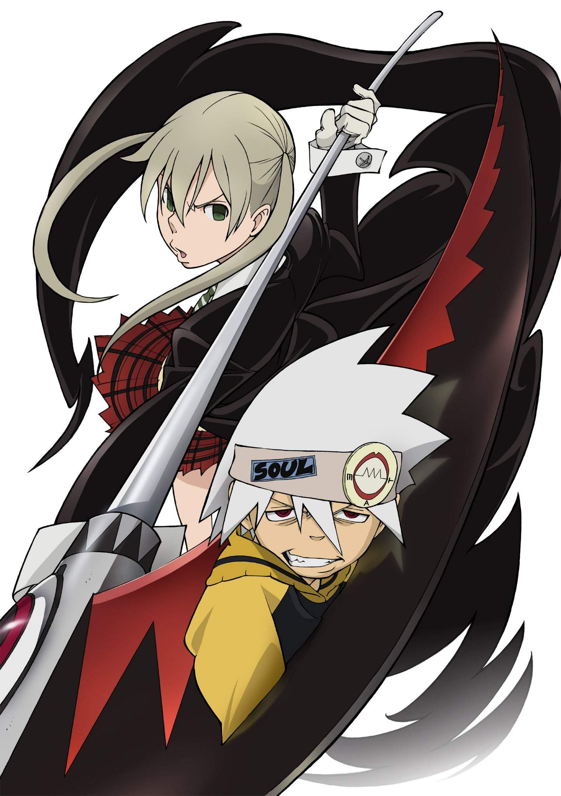
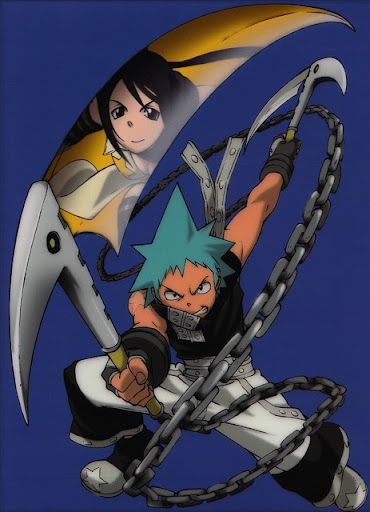
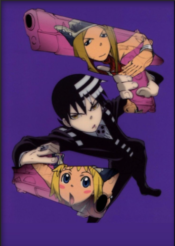
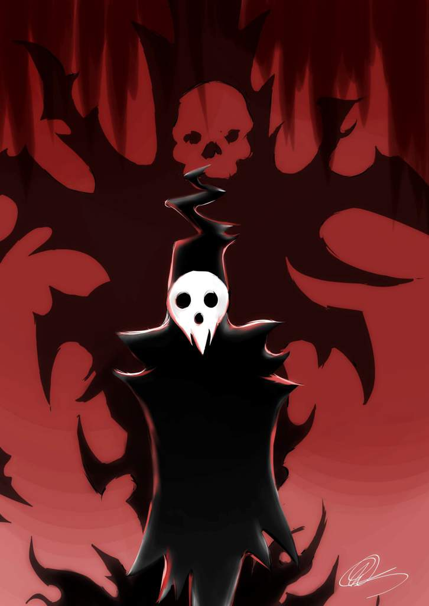
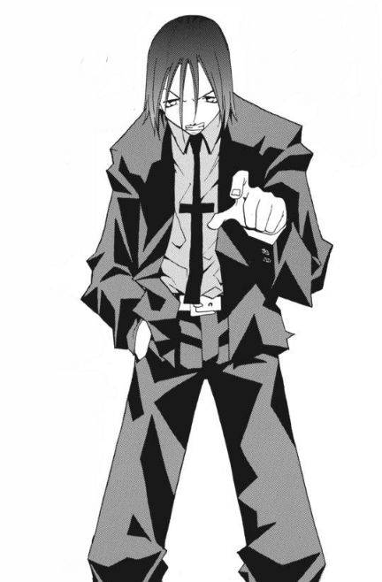

-
Maka Albarn A Artífice De Foice
Artesã de foices e parceira de Soul Eater. Ela é sempre responsável com suas tarefas na Shibusen, sendo uma das alunas mais aplicadas. O principal objetivo dela é superar sua mãe, criando uma Death Scythe mais forte que seu pai. O tamanho de soul posibilita maka ataca a carta adjacente da selecionada mais com dano reduzido.
ATK/ 2700 DEF/ 2500 -
Black Star O Homem Que Superar Os Deuses
Um jovem vindo de um tradicional clã de assassinos, possui a habilidade de utilizar os pulsos de sua alma para usar de um golpe mortal. Junto de sua arma, Tsubaki, ele tenta realizar o desejo de criar uma Death Scyte e superar os deuses. Por sua experiência pode ataca duas vezes a cada turno.
ATK/ 1500 DEF/ 1900 -
Death The Kid, Filho Da Morte
Filho de Shinigami-Sama, é dito que Kid é um jovem tão perfeito que acabou se tornando perfeccionista. Sua maior mania consiste em aplicar a simetria em tudo, desejando um mundo perfeito, onde tudo tenha lados iguais e simétricos. Isto o atrapalha muito em uma luta, mas quando isto é superado, é um grande adversário. Depois De 4 turnos atacando no 5 causa 3x de dano.
ATK/ 1650 DEF/ 2000 -
Shinigami-sama,Senhor Deus da Morte
Diretor e fundador da Shibusen, é um ser de aparência estranha, usando uma cômica máscara de caveira. Apesar de seu jeito engraçado, Shinigami-Sama possui seu lado sério. Há muitos anos, derrotou e aprisionou o Kishin Asura, para que o mundo não entrasse em insanidade total. Usando o seu Shinigami-Chop causa dano massivo. (Quando sua Death Scythe (Spirit) esta em campo consegue usar ela para subir seu ATK e DEF em 2x.)
ATK/ 3600 DEF/ 2800 -
Dr. Franken Stein, o Melhor Artesão de Toda Shibusen.

Um cientista louco que foi o melhor artesão de toda Shibusen, possui a habilidade de adaptar sua alma podendo manipular qualquer arma. Ele foi o primeiro manipulador de Death Scythe. Seus ataques na alma podem cauda um dano explosivo.
ATK/ 2500 DEF/ 2300 -
Spirit a Death Scythe
Antes da mãe de Maka transforma-lo em Death Scythe seu nome era Spirit. Seu primeiro manipulador não foi a mãe de Maka, mas o estranho Dr. Franken Stein. Ele participa de missões designadas por Shinigami junto ao Stein (por ser capaz de adaptar sua alma para que possa manipular qualquer arma). Seu atual manipulador é o Shinigami-Sama. Death Scythe ama muito sua filha Maka, porém é rejeitado pela mesma. Spirit mesmo sendo fraco sozinho pode causa uma loucura com as cartas certas em jogo pode acabando virando o jogo.(Pode se juntando com o Shinigami-Sama aumentando seus status)
ATK/ 1000 DEF/ 2900 -
Shinigami-Sama e sua Death Scythe

Shinigami-Sama Com sua Death Scythe fica muito mais forte do que o de costume conseguindo corta seus inimigos com uma facilidade imensa e nao recuando por nada, seu ATK e DEF sobe 2x e podendo ser o terror dos seus inimigos. Mais depois de ataca volta tendo que fica em modo de Defesa por 1 turno completo antes de pode ataca denovo. "A única verdadeira foice da morte"
ATK/ 7200 DEF/ 5600